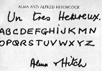

|
Hitchcock, la légende du suspense |
|

|
Nombreux sont les réalisateurs qui furent (et sont encore aujourd'hui) influencés par l'oeuvre d'Hitchcock tant sa filmographie est importante et sa personnalité forte et ambigue. On peut cependant en sélectionner un petit nombre se déclarant comme ses héritiers directs Réalisateur fétiche de ce que l'appele la nouvelle vague, il fut (avec Donald Spoto) un des plus grands fan et spécialiste d'Hitchcock. Ami de Sir Alfred (si tant est qu' Hitchcock en ait vraiment eu), il fait paraître en 1967 le célèbre Hitchcock/Truffaut basé sur des interviews concernant toute l'oeuvre d'Hitchcock. En tant que cinéaste, il fera son plus bel hommage à Hitchcock dans son dernier film Vivement dimanche une comédie policière douce/amère volontairement tournée en noir et blanc que Truffaut réalisera atteint par la maladie qui l'emportera le 21 octobre 1984 à l'age de 52 ans. Ci-dessous une carte de noël humoristique envoyée par Alfred et Alma Hitchcock à François Truffaut On peut une nouvelle fois remarquer l'esprit malicieux et farceur d'Hichcock qui pour souhaiter un Joyeux noël à Truffaut, lui envoit un alphabet ne comportant pas la lettre L, (ce qui fait un joyeux no-L...)
Né le 11 septembre 1940, il est un des réalisateurs américains les plus célèbre aujourd'hui. Esprit brilliant, physicien de profession (obtient un prix durant ses études pour un projet de réalisation d'un calculateur analogique pour résoudre les équations différentielles), il a réalisé de nombreux succès du box-office américain comme Les incorruptibles (1987), Phantom of the paradise (1974) ou bien Carrie (1976). Largement inspiré d'Hitchcock, on peut cependant lui reprocher une tendance au plagiat dont Body double (1984) inspiré à la fois de Fenètre sur cour et de Vertigo (avec la violence en plus...) ainsi qu'Obsession (1976) en partie inspiré de Psychose sont de parfaits exemples !
Voir également Blow out (1981) dont le thème est inspiré du film
Blow up d'Antonioni.
|